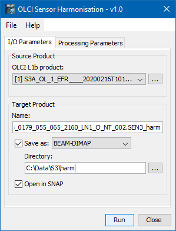
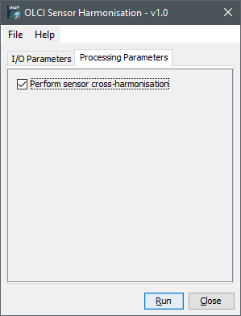
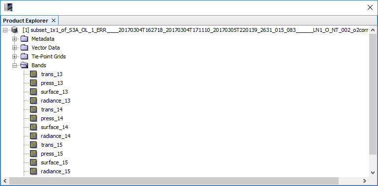

| SNAP Data Processors - OLCI Harmonisation Processor Description |
|

OLCI L1b product: Used to select the OLCI L1b source product. Use the ... button to open a data product currently not opened in the Sentinel Toolbox.
DEM product (optional): Used to select an optional source product providing an alternative DEM to be used instead of the altitude information provided with the L1b product. This can be an improvement in certain cases, e.g. over central Greenland where the OLCI altitudes are known to contain some artefacts. Use the ... button to open a data product currently not opened in the Sentinel Toolbox. - If a DEM product is selected, it is internally collocated with the OLCI L1b product, the latter one being the master product. Hence, if the collocation region is not fully covered by the alternative DEM, the L1b altitude is used in the missing regions.
Name: Used to specify the name of the target product.
Save to: Used to specify whether the target product should be saved to the file system. The combo box presents a list of file formats.
Open in SNAP: Used to specify whether the target product should be opened in the Sentinel Toolbox. When the target product is not saved, it is opened in the Sentinel Toolbox automatically.

Name of DEM altitude band:
The name of the DEM altitude band in the optional DEM product. If no DEM product is specified, this parameter
has no effect. There is no default altitude band name.
Only process OLCI band 13 (761.25nm):
If selected, only OLCI band 13 will be processed and its related outputs are written to the target product.
Otherwise bands 13-15 will be processed. The default setting is 'true'.
This is sufficient for many applications such as cloud screening and significantly saves processing time.
Write harmonised radiances:
If set, the harmonised radiances (recomputed using the retrieved effective transmittances) are written
to target product. The default setting value is 'true'.
The processor provides for the OLCI O2A bands 13-15 (or optionally just for band 13) the following outputs:

trans_n:
The rectified and desmiled transmission for band n.
press_n:
The pressure for band n for a given rectified transmission, which would be measured in given band
without scattering. Useful for a first object height estimation for bright targets.
surface_n:
The rectified transmission for band n, which would be measured without scattering ('surface transmission').
Useful only for comparison purposes.
radiance_n:
The harmonised radiance (recomputed using the retrieved effective transmittance) for band n.